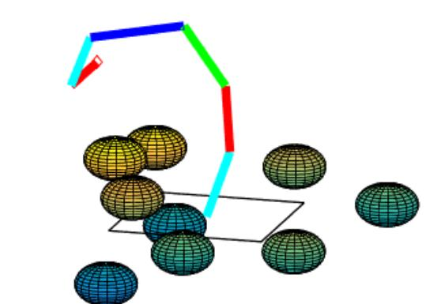

Inverse Kinematics Using Optimization
Through the use of function optimization in MATLAB, the position and
orientation of a 3-dimensional snake robot is controlled in order to reach into an environment and
grasp an object. The snake robot consists of a serial chain of kinematic links, of arbitrary number
and
length, where each joint is controlled with a set of Euler angles (roll, pitch, yaw). The environment
is filled with spherical obstacles that the robot must avoid in reaching the obstacle.